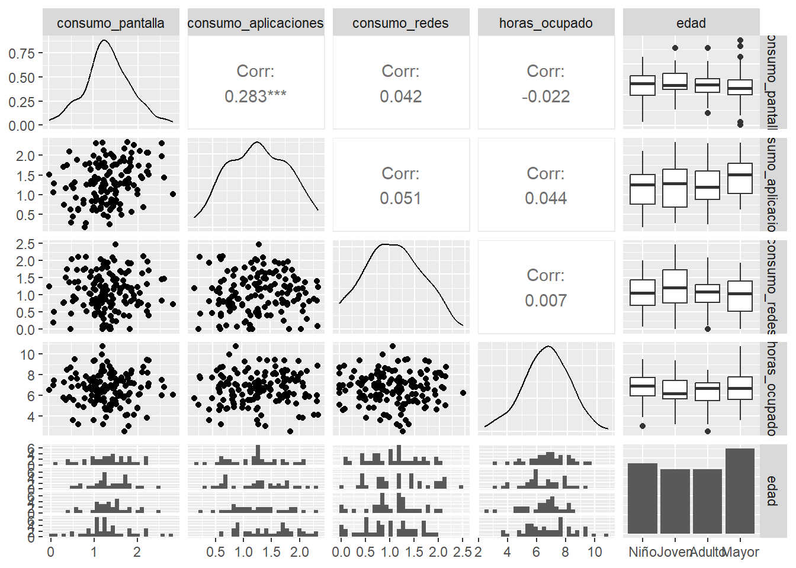

Taller evaluado de repaso para el Primer Parcial
20582- Análisis de Datos para el GMAT
RESUMEN
Estudiaremos como varía el tiempo dedicado a las pantallas (y redes sociales) entre los distintos rangos de edad y su posible relación con las actividades programadas como puede ser entrenar algun deporte, la lectura o las extraescolares en niños.
OBJETIVOS
Queremos ver que los distintos habitos no están correlacionados (porque nuestros datos son aleatorios).
METODOLOGÍA
Usaremos herramientas de analisis multivariante, en particular nos apoyaremos en la normalidad multivariante. También modelarizaremos por multinomiales y por regresiones multiples.
RESULTADOS
Hay bastante redundancia en los datos, estan bien repartidos y, pese a todo esto, podemos decir que las medias de los datos cuantitativos es distinto para gente con distintas prioridades.
PLANTEAMIENTO
Creemos unos datos con los que trabajar a partir de una normal multivariante de media \(\mu=(0.7,0.66,0.51,6.5)\) y matriz de covarianzas: \[\Sigma = \begin{pmatrix} 0.3 & 0.08 & 0.05 & 0.05 \\ 0.09 & 0.28 & 0.03 & 0.01 \\ 0.08 & 0.005 & 0.32 & 0.01 \\ 0.08 & 0.38 & 0.49 & 2 \end{pmatrix}\] Las variables cuantitativas que usaremos son ‘consumo_pantalla’, el número de horas al día con pantallas abiertas, ‘consumo_aplicaciones’ y ‘consumo_redes’ de igual forma con el tiempo dedicado a aplicaciones y a las redes, respectivamente, y, ‘horas_act_programadas’ que es el total de horas semanales dedicadas a actividades programadas externas al trabajo y a los estudios como pueden ser hacer deporte, clases de teatro, etc. Como variables ordinales tenemos ‘edad’ que se divide en cuatro niveles de manera ordenada: ‘Niño’, ‘Joven’, ‘Adulto’ y ‘Mayor’, la variable ‘nivel_estres’ con niveles: ‘Muy Bajo’, ‘Bajo’, ‘Medio’, ‘Alto’, ‘Muy Alto’ y, como última variable ordinal ‘habito_lectura’ con los siguientes niveles: ‘Nada’, ‘Poco’, ‘Regular’, ‘Frecuente’, ‘Muy Frecuente’. Finalmente, como variables nominales estn, por un lado la variable ‘dispositivo_usual’ con las cuatro siguientes opciones: ‘móvil’, ‘tele’, ‘tablet’, ‘PC’; y por otro lado ‘max_dedicacion’ con una de estas tres opciones: ‘lectura’, ‘deporte’ y ‘pantallas’.
ANÁLISIS DESCRIPTIVO
En este gráfico podemos ver como solo destaca cierta correlación entre el tiempo (horas/día) frente a pantallas y el tiempo usado en aplicaciones. Más adelante haremos un test de correlaciones para saber si es o no significativa.
Calculemos, a continuación, la varianza generalizada y la total para obtener más información. La varianza generalizada es el producto de los valores propios de la matriz de covarianzas muestrales \(S\). Mientras que la variación total es la suma de los valores propios de la matriz de covarianzas muestrales.
En este caso, la varianza generalizada tiene un valor de \(0.0467\) y la varianza total de \(3.1441\). Como la varianza total es mucho más grande que la varianza generalizada (dos ordenes de magnitud), podemos decir que pese a la variación individual que presentan las variables, todas estan fuertemente correlacionadas entre sí lo que podría indicar que hay redundancia entre las variables.
PRUEBAS ESTADÍSTICAS
Para el cuarto paso elegimos la variable ‘max_dedicacion’ que representa la actividad que más tiempo consume al indiviuo de entre deporte, lectura o pantallas. Estimaremos los parámetros de esta variable suponiendo que sigue una distribución multinomial. Usaremos la frecuencia relativa para estimar la probabilidad de cada suceso y calcularemos la probabilidad de que de 20 individuos, haya más de seis que prioricen cosas distintas (o le inviertan más tiempo).
[1] 0.1045689Así, en una muestra de \(20\) la probabilidad es de un \(10.45\)% de que seis o más personas dediquen más tiempo a actividades distintas.
A continuación ajustaremos la variable ‘consumo_aplicaciones’ repecto a las otras tres variables cuantitativas.
Y = cuantitativas$consumo_aplicaciones
X = cuantitativas %>%
dplyr::select(c(1,3,4))
# Ajustar el modelo de regresión
modelo <- lm(Y ~ ., data = X)
summary(modelo) # Resumen del modelo
Call:
lm(formula = Y ~ ., data = X)
Residuals:
Min 1Q Median 3Q Max
-0.99466 -0.38318 -0.02134 0.42046 1.09767
Coefficients:
Estimate Std. Error t value Pr(>|t|)
(Intercept) 0.77761 0.22198 3.503 0.000611 ***
consumo_pantalla 0.27847 0.07825 3.558 0.000504 ***
consumo_redes 0.03472 0.07166 0.484 0.628778
horas_ocupado 0.01684 0.02669 0.631 0.529074
---
Signif. codes: 0 '***' 0.001 '**' 0.01 '*' 0.05 '.' 0.1 ' ' 1
Residual standard error: 0.4937 on 146 degrees of freedom
Multiple R-squared: 0.08393, Adjusted R-squared: 0.06511
F-statistic: 4.459 on 3 and 146 DF, p-value: 0.004991Ahora, calculemos la función ‘score’ de \(Y\) con parámetros \(\beta_0, \beta_1, \beta_2\) y \(\beta_3\). No he podido realizar esta parte puesto que no termino de comprender que es la función score de este modelo. Entiendo que será una matriz \(4 \times 1\) con cada componente la parcial respecto a una de las variables pero no de \(Y\), sino de \(f = log(Y)\) que es más extraño. Así, usaremos lo que nos dice internet que relaciona estos dos conceptos a través de la funcón ‘predict’:
predicciones <- predict(modelo, X)
# Cálculo de métricas
mse <- mean((Y - predicciones)^2)
mae <- mean(abs(Y - predicciones))
r2 <- summary(modelo)$r.squared
# Imprimir resultados
cat("MSE:", mse, "\n")MSE: 0.2372031 cat("MAE:", mae, "\n")MAE: 0.4036612 cat("R²:", r2, "\n")R²: 0.08393035 Que parece ser que nos advierten de que el modelo no se ajusta bien a los datos.
Finalmente, para realizar el quinto paso de la entrega, hagamos un contraste de hipótesis para medias entre la variable ‘consumo_aplicaciones’ y ‘consumo_redes’:
library(Hotelling)
lectores <- tiempo_libre %>%
filter(max_dedicacion == "lectura") %>%
dplyr::select(c(1,2,3,4))
adictos <- tiempo_libre %>%
filter(max_dedicacion == "pantallas") %>%
dplyr::select(c(1,2,3,4))
resultado <- hotelling.test(lectores, adictos)
print(resultado)Test stat: 10.376
Numerator df: 4
Denominator df: 88
P-value: 0.04757 Como el p-valor es ligeramnete menor a \(0.05\), en este caso existen suficientes evidencias estadísticas como para rechazar la hipótesis de que los vectores de medias son iguales.
BIBLIOGRAFÍA
Cuadras y los apuntes de mercè e Irene.